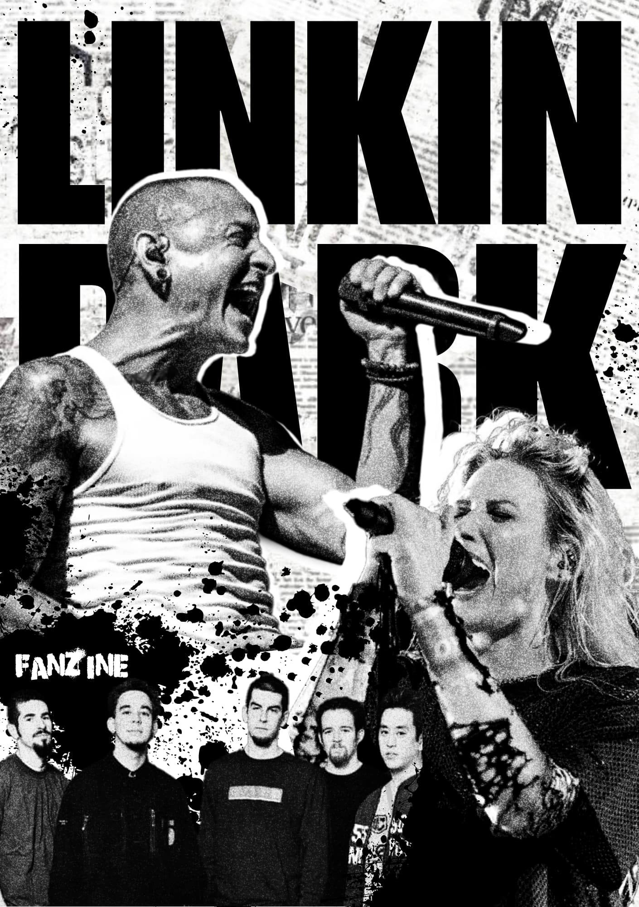
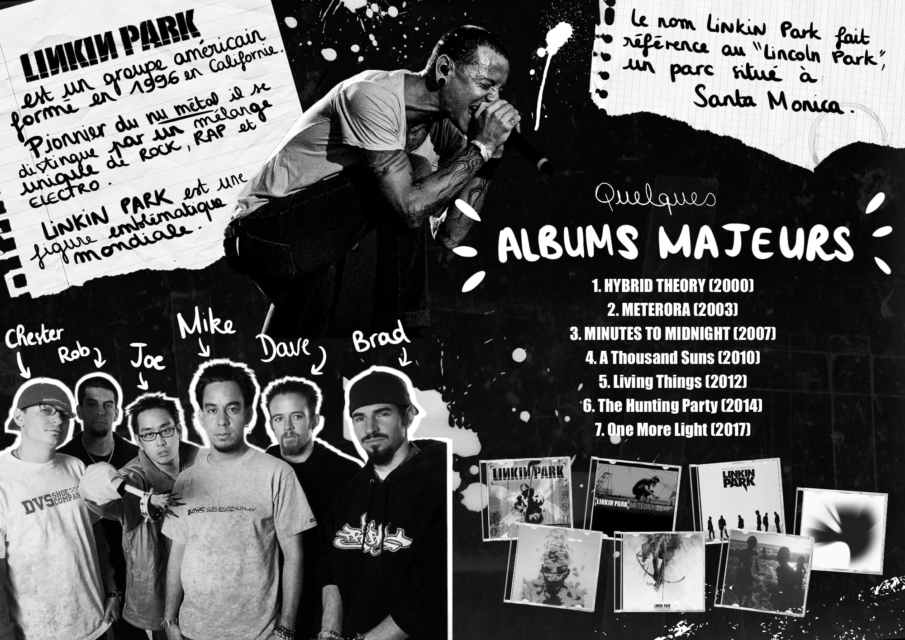
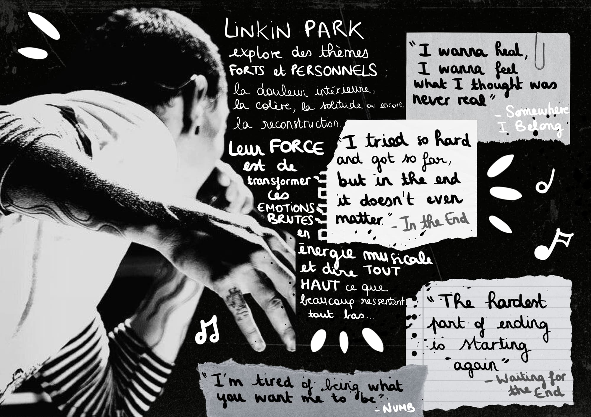
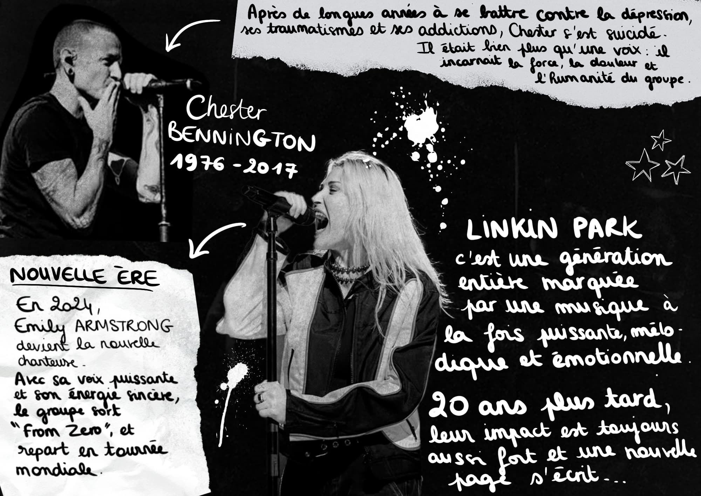

←
fanzine
Ce fanzine est un projet éditorial qui a été réalisé dans le cadre de mes cours avec une contrainte technique précise : un pliage en 8 volets et une impression exclusivement en noir et blanc.
J'ai choisi de le faire sur le groupe Linkin Park, un groupe que j’apprécie beaucoup, avec une approche scrapbooking un peu grunge en mixant collage numérique et l'écriture manuscrite réalisée sur Procreate pour le côté très personnel du fanzine, comme si nous étions dans le journal intime d’une fan du groupe.
Je souhaitais un résultat assez immersif, qui raconte l'histoire du groupe et en essayant de transmettre son émotion et son énergie.



